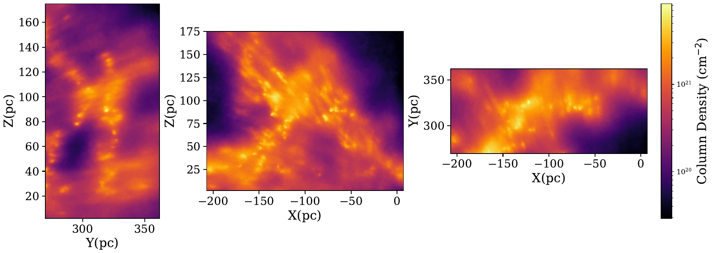
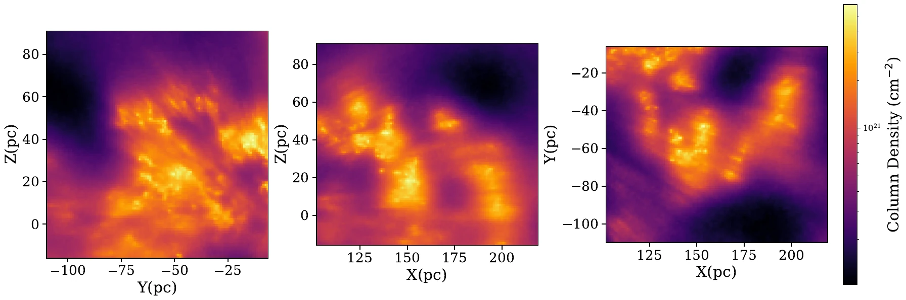
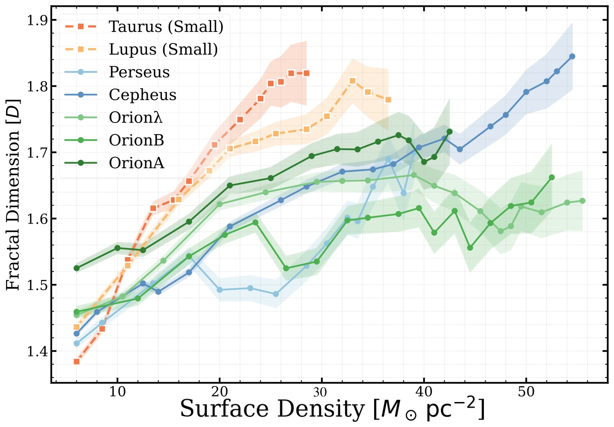
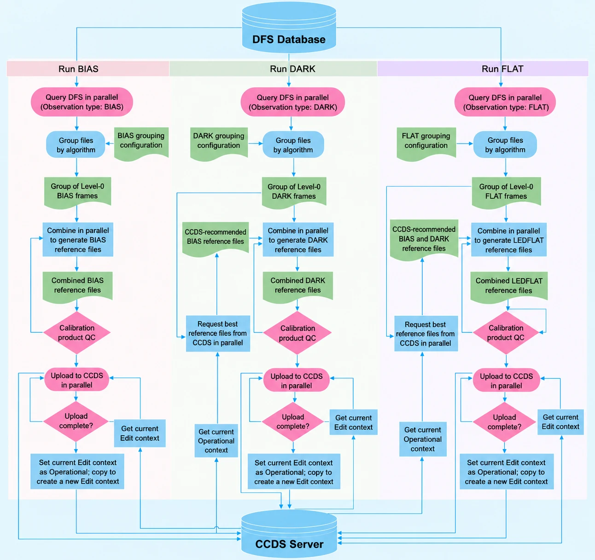

Cloud structure & hierarchy
How does the geometry of molecular gas change with density and spatial scale? I study fractal and size-based diagnostics in reconstructed 3D clouds and their 2D projections.
BOWEI ZHAO / 赵博伟 · ASTRONOMY
PhD student · University of Chinese Academy of Sciences
National Astronomical Observatories, CAS
Exploring the structure of clouds
and the origins of stellar masses.
I am a PhD student in astronomy at the University of Chinese Academy of Sciences, based at the National Astronomical Observatories, Chinese Academy of Sciences (NAOC). I work with Prof. Chao Liu and Prof. Juanjuan Ren in the integrated Master’s–PhD programme. Before this, I studied optoelectronic information science and engineering at China Three Gorges University.
My research combines astronomical observations, scientific computing, and ideas from complexity science. I currently use three-dimensional dust maps and fractal analysis to investigate the density-dependent structure of nearby star-forming regions. Alongside this work, I contribute to the CSST calibration data system and explore stellar spectral classification.

RESEARCH INTERESTS
My broader scientific interest is the physical origin of the core mass function (CMF) and the stellar initial mass function (IMF): how does a structured molecular cloud produce a population of stars with different masses?
I approach this question through the organisation of matter across scales, from molecular gas to dense cores, protostars, and stars. My current cloud-structure project is a first step towards this broader goal.
How does the geometry of molecular gas change with density and spatial scale? I study fractal and size-based diagnostics in reconstructed 3D clouds and their 2D projections.
I would like to connect structural measurements with molecular-line observations to investigate how turbulence, gravity, magnetic fields, and stellar feedback influence fragmentation.
I am interested in applying comparable measurements to observations and star-formation simulations, testing which aspects of cloud morphology trace physical conditions and evolutionary stages.
01 / RESEARCH
My main project focuses on nearby star-forming regions. Two complementary projects develop my experience in astronomical spectroscopy and the calibration infrastructure behind scientific data.
MAIN PROJECT · 2023–PRESENT
Using the Leike et al. (2020) three-dimensional dust reconstruction, I investigate the fractal and hierarchical structure of nearby star-forming regions, and how these geometric descriptions vary with gas density.
I independently implemented four families of fractal-dimension estimators in two and three dimensions, and developed a Python package for density-threshold scans, connected-structure measurements, scaling fits, and diagnostic plots.
I compare reconstructed clouds with their projected maps and assess sensitivity to density thresholds, structure selection, and spatial resolution. This work aims to establish which structural differences are robust before interpreting their possible connection to fragmentation.



Tools for interpreting astronomical data.
SPECTROSCOPY & MACHINE LEARNING
I investigate white-dwarf–main-sequence binary identification in SDSS and LAMOST spectra, exploring the neural-network spectral modelling and Gaussian process classification approach of Li et al. (2025). My current work focuses on data preparation and candidate-selection procedures.
LAMOST · SDSS · Spectral classification
CSST & SCIENTIFIC SOFTWARE
For the China Space Station Telescope calibration reference data system, I develop reference-file recommendation rules and quality checks, and contribute to structured storage, version management, and integration with processing pipelines.
Reference data · Quality control · Pipelines

02 / PUBLICATIONS
Bowei Zhao, S. Wei, J. Ren, F. Wang, C. Ling & C. Liu · 2025
Progress in Astronomy, 43(2), 354–374 · Review in Chinese with an English abstract
Y. Yan, Y. Wu, J. Nie, et al. (including Bowei Zhao) · 2026
The Astronomical Journal, 171, 264
L. Wang, Z. Chen, Z. Luo, et al. (including Bowei Zhao) · 2026
Astronomy & Astrophysics, 709, A239
IN PREPARATION
Bowei Zhao, C. Liu, J. Ren, H. Li & A. Xiong
03 / BACKGROUND
EDUCATION
Integrated Master’s–PhD programme · Astronomy
Research institute: NAOC, Chinese Academy of Sciences
BSc · Optoelectronic Information Science and Engineering
Python / Scientific computing / Statistical analysis / Linux
04 / OBSERVING & PRESENTATIONS
Graduate-student observer in three BFOSC time-series spectroscopy runs with the Xinglong Observatory 2.16-m telescope (2023–2025), for a team programme investigating the binary origin of metal-rich blue horizontal-branch stars.
I assisted with target acquisition, exposure-time decisions and nightly target prioritisation, and preprocessed the acquired spectra.
Oral presentation · First National Symposium on Astrochemistry, Shenzhen, November 2025.
On the Three-dimensional Fractal Structure of Local Star-Forming Regions.
Co-authored poster · ADASS XXXV, November 2025.
CSST On-Orbit Calibration Strategy and Data System. Co-author; not the presenting author.


05 / CONTACT
I welcome conversations about interstellar structure,
star formation, and research collaboration.